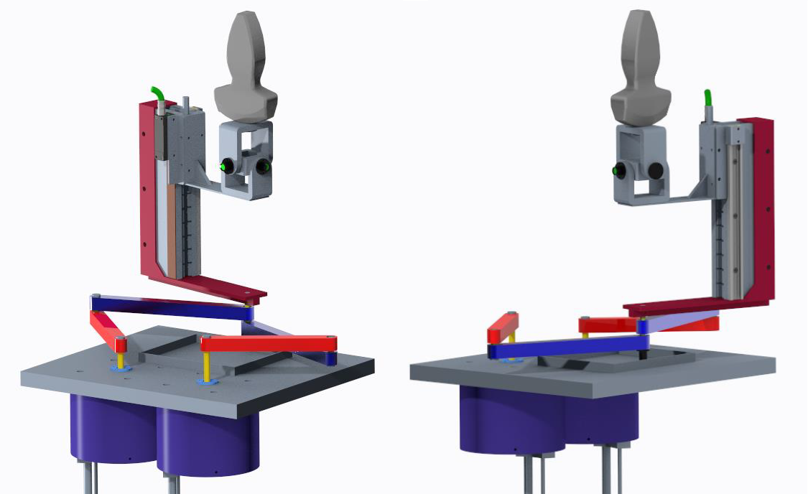
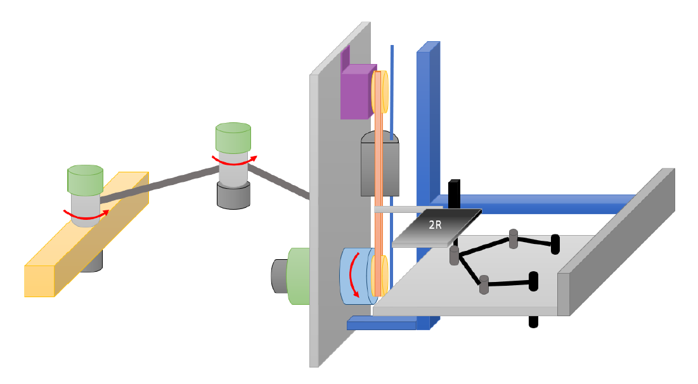
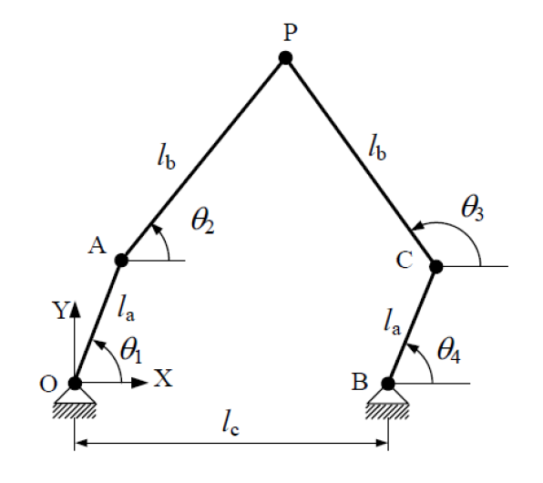
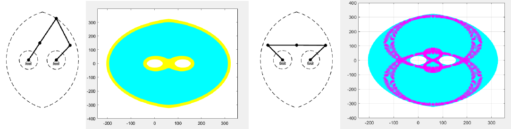
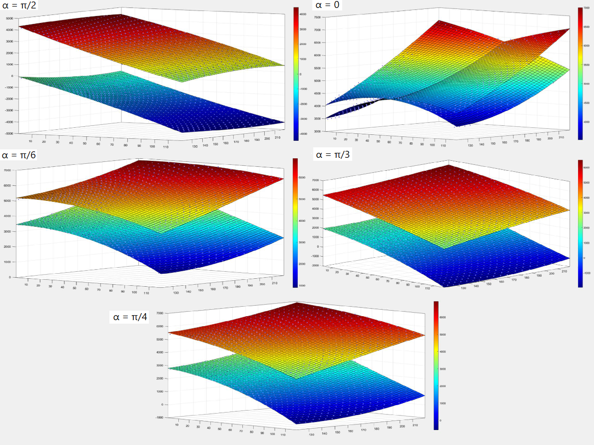
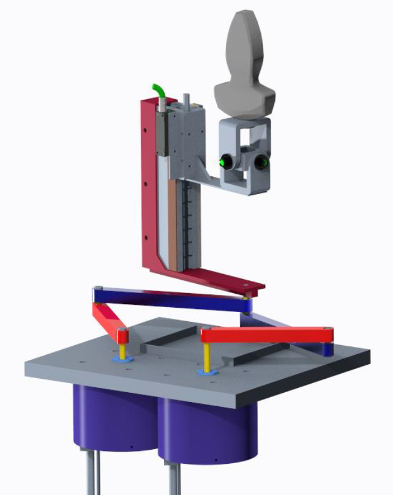
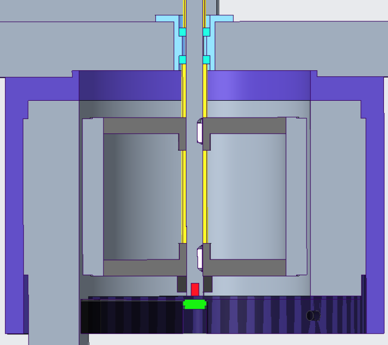
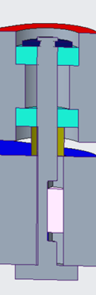
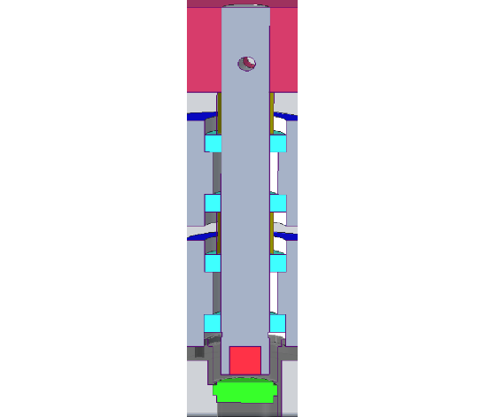
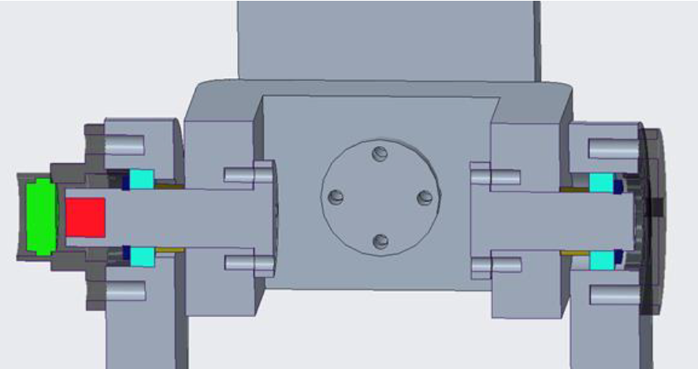

This thesis was developed within the framework of the “THE Tuscany Health Ecosystem — Robotics and Automation for Health” project, with Scuola Superiore Sant’Anna as a partner. The work focused on the study and design of a new haptic master interface for tele-echography, intended to support the remote execution of ultrasound examinations.
The objective was to design a master-side robotic interface capable of reproducing the usual probe motions performed by a radiologist, while enabling bilateral teleoperation with force feedback to make the remote examination more consistent with in-person ultrasound procedures.
The design process started from the analysis of the ultrasound task. Main diagnostic procedures were considered to identify the required workspace, while anthropometric data and literature on probe–patient interaction were used to define mechanical requirements. A maximum force of 35 N along the probe axis was adopted as a reference load case for the design.
The interface was required to provide consistent force feedback, allow natural movements for the radiologist, reproduce the examination as faithfully as possible, and maintain high transparency through reduced inertia, low friction, and sufficient structural stiffness.
A two-stage master system was proposed. The first stage is a positioning arm used to perform large-scale motions and place the haptic interface near the anatomical region of interest. Once positioned, the arm is locked, and fine probe motions are performed using the haptic interface.
This architecture reduces the required workspace of the active haptic interface, limiting overall size, mass, inertia, and encumbrance. The final concept combines a hybrid 2R + 1P positioning arm with a haptic interface based on a five-bar linkage, a prismatic joint, and a spherical joint.

Definition of required ultrasound procedures, workspace, and probe–patient load conditions.
Selection of a two-stage architecture with positioning arm and haptic interface.
Five-bar linkage synthesis, workspace analysis, and singularity evaluation.
Kinetostatic modeling and actuator sizing under worst-case force conditions.
CAD-level modeling of the complete mechanical assembly, including links, joints, supports, sensors, and structural interfaces.
The core of the haptic interface is a five-bar linkage, a two-degree-of-freedom parallel robot. The linkage was selected to provide planar motion with compact geometry and good mechanical transparency. The desired local workspace for fine probe manipulation was defined as approximately 100 mm × 100 mm × 120 mm.
The mechanism geometry was studied through forward kinematics and workspace analysis. Link lengths were selected to obtain the required workspace while keeping the mechanism compact. The final five-bar linkage dimensions were selected to operate within a safe region away from internal singularities.

The singularity analysis was based on the velocity relationship between the actuated joint angles and the end-effector velocity. Two Jacobian matrices were considered, allowing the identification of type-I singularities on the workspace boundary and type-II singularities inside the workspace.
Since type-II singularities can compromise controllability inside the operating region, the design was constrained to a conservative rectangular workspace located away from singular configurations. MATLAB was used to map the workspace and evaluate singularity regions for different geometric configurations.

The actuator sizing was performed through a kinetostatic analysis of the parallel manipulator. A maximum force of 35 N, applied in a generic direction parallel to the support plane, was considered at the end-effector. The corresponding joint torques were computed over the possible postures within the workspace.
The analysis was implemented in MATLAB by solving the static equilibrium equations for different force orientations and robot configurations. The maximum required torques at the actuated joints were then used to select suitable actuation components.

The final interface combines a five-bar linkage with a prismatic joint and a spherical joint, enabling six-degree-of-freedom interaction at the probe handle. The design choices were oriented toward mechanical simplicity, stiffness, transparency, and reduced friction.
The mechanical design included link sizing, joint architecture, actuator and sensor integration, and CAD modeling of the system. The five-bar links were designed using aluminum square tubular profiles, while the prismatic and spherical joint architecture was developed to reproduce the probe manipulation task.

Interactive 3D visualization of the haptic interface assembly. The model allows inspection of the mechanism architecture, joint layout, and overall system integration.
Detailed sectional views were developed to define the mechanical assembly of the main joints, including bearing arrangements, shafts, spacers, retaining elements, encoder integration, and structural interfaces.




MATLAB scripts were developed to support the kinematic and kinetostatic analysis of the haptic interface, including workspace and singularity mapping, as well as joint torque evaluation under different loading directions.